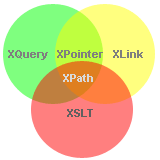

2024-03-09
XPath 教程
参考: 菜鸟-XPath
XPath 是一门在 XML 文档中查找信息的语言。
在学习之前应该具备的知识：
- HTML / XHTML
- XML / XML Namespaces
- 什么是 XPath ?
- XPath 使用路径表达式在 XML 文档中进行导航
- XPath 使用路径表达式来选取 XML 文档中的节点或者节点集。这些路径表达式和我们在常规的电脑文件系统中看到的表达式非常相似。
- Path 包含一个标准函数库
- XPath 含有超过 100 个内建的函数。这些函数用于字符串值、数值、日期和时间比较、节点和 QName 处理、序列处理、逻辑值等等。
- XPath 是 XSLT 中的主要元素
- XPath 是 XSLT 标准中的主要元素。如果没有 XPath 方面的知识，您就无法创建 XSLT 文档。 您可以在我们的 《XSLT 教程》 中阅读更多的内容。 XQuery 和 XPointer 均构建于 XPath 表达式之上。XQuery 1.0 和 XPath 2.0 共享相同的数据模型，并支持相同的函数和运算符。 您可以在我们的 《XQuery 教程》 中阅读更多有关 XQuery 的知识。
- XPath 是一个 W3C 标准
- XPath 于 1999 年 11 月 16 日 成为 W3C 标准。 XPath 被设计为供 XSLT、XPointer 以及其他 XML 解析软件使用。 您可以在我们的 《W3C 教程》 中阅读更多有关 XPath 标准的信息。

相关
- XSLT
- XSLT 是针对 XML 文件的样式表语言。 通过 XSLT，您可以把 XML 文件转换为其他的格式，比如 XHTML。 如果您希望学习更多有关 XSLT 的知识，请访问我们的 《XSLT 教程》。
- XQuery
- XQuery 和 XML 数据查询有关。 XQuery 被设计用来查询任何可作为 XML 形态呈现的数据，包括数据库。 如果您希望学习更多有关 XQuery 的知识，请访问我们的 《XQuery 教程》。
- XLink 和 XPointer
- XML 中的链接被分为两个部分：XLink 和 XPointer。 XLink 和 XPointer 定义了在 XML 文档中创建超级链接的标准方法。 如果你希望学习更多有关 XLink 和 XPointer 的知识，请访问我们的 《XLink 教程和 XPointer教程》。